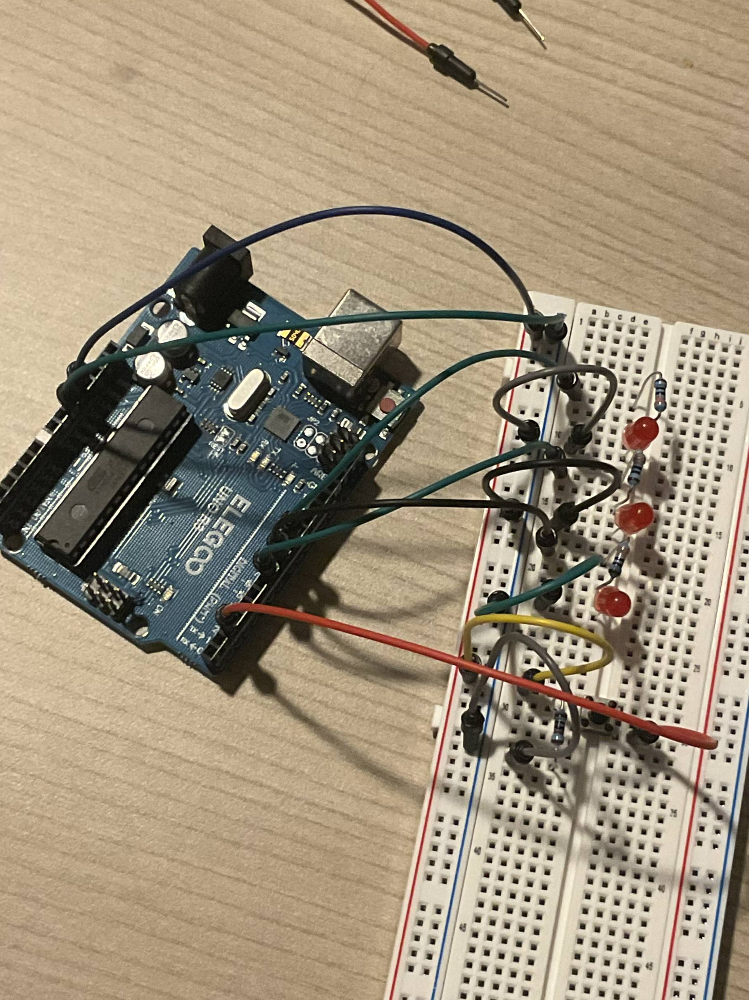
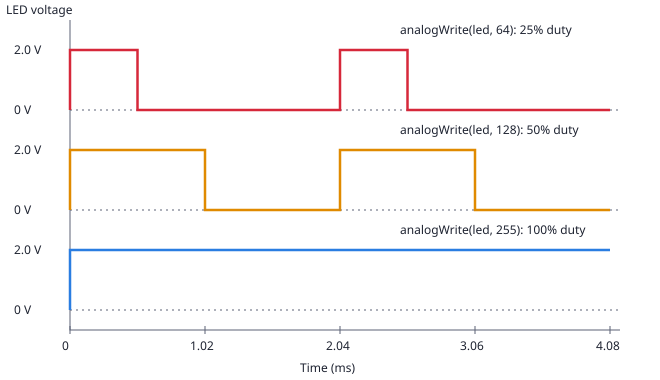

Assignment 2: Breathing Firefly Light-Up Toy
A night-light prototype for a plush toy: one LED fades in and out continuously, and holding a button lights two more LEDs.
1. Schematic and breadboard


2. Current-limiting resistor calculations
Each LED is sized for a target of 10 mA (0.010 A) from a 5 V pin, comfortably under the Uno's recommended 20 mA per pin. Each resistor is sized with Ohm's law:
| Part | Forward voltage | Calculation | Resistor used | Actual current |
|---|---|---|---|---|
| Red LED (×3) | ≈ 2.0 V | (5 − 2.0) / 0.010 = 300Ω | 330Ω | 3.0 / 330 = 9.1 mA |
| Button | n/a | 5 V / 10 kΩ = 0.5 mAΩ | 10 kΩ | 5 / 10,000 = 0.5 mA |
The LED value is rounded up to the next standard resistor, so the real current is slightly under 10 mA. Power in each LED resistor is I²R ≈ 27 mW, far below a 1/4 W rating. For the button, 10 kΩ is small enough to hold the pin firmly LOW and large enough to waste almost no power.
3. Circuit in action

4. Firmware
A for loop steps the brightness of the Pin 9 LED with analogWrite(). The button is read with digitalRead() on every step so it responds immediately, and the other two LEDs follow it with digitalWrite().
// Pin for the fading LED (D9 supports PWM)
const int LED_FADE = 9;
// Pin for LED 2, simple on/off
const int LED_A = 7;
// Pin for LED 3, simple on/off
const int LED_B = 8;
// Pin the button is read from
const int BUTTON = 2;
// setup() runs once when the Arduino powers up
void setup() {
// Make the fading LED pin an output
pinMode(LED_FADE, OUTPUT);
// Make LED 2's pin an output
pinMode(LED_A, OUTPUT);
// Make LED 3's pin an output
pinMode(LED_B, OUTPUT);
// Make the button pin an input (the external 10k resistor pulls it LOW)
pinMode(BUTTON, INPUT);
}
// Helper that copies the button state onto LED 2 and LED 3
void updateButtonLEDs() {
// Read the button: HIGH (1) when pressed, LOW (0) when released
int pressed = digitalRead(BUTTON);
// Turn LED 2 on when pressed, off when released
digitalWrite(LED_A, pressed);
// Turn LED 3 on when pressed, off when released
digitalWrite(LED_B, pressed);
}
// loop() runs over and over after setup() finishes
void loop() {
// For-loop: step the brightness up from 0 to 255 in increments of 5
for (int level = 0; level <= 255; level += 5) {
// Set the PWM duty cycle of LED 1 to the current brightness
analogWrite(LED_FADE, level);
// Check the button on every step so it never feels laggy
updateButtonLEDs();
// Wait 15 ms so the fade is smooth (about 0.8 s to go up)
delay(15);
}
// For-loop: step the brightness back down from 255 to 0
for (int level = 255; level >= 0; level -= 5) {
// Set the PWM duty cycle of LED 1 to the current brightness
analogWrite(LED_FADE, level);
// Check the button on every step
updateButtonLEDs();
// Wait 15 ms between steps (about 0.8 s to go down)
delay(15);
}
}5. Questions
Q1: Voltage across an LED with analogWrite()

Pin 9's PWM runs at about 490 Hz, so one period is about 2.04 ms. The duty cycle is value/255: 64 gives 25%, 128 gives 50%, and 255 gives 100% (always on). The voltage is measured across the LED, so the "on" level is the forward voltage (about 2 V), not 5 V, because the resistor drops the other 3 V. The pulses are too fast to see, so the LED looks dimmer or brighter instead of flickering.
Q2: Total current draw and battery life
Each LED draws about 9.1 mA, so all three on is 3 × 9.1 = 27.3 mA (about 27.8 mA with the button pressed). Each pin sources 9.1 mA, below the 20 mA recommended per pin (40 mA absolute maximum), and the total is far below the chip's 200 mA limit, so this is within the limits. On a 1200 mAh battery, the LEDs alone would run for 1200 / 27.3 ≈ 44 hours. The Uno board itself draws roughly 45 mA (approximate), so the real runtime is closer to 1200 / (27.3 + 45) ≈ 17 hours. In normal use the fading LED is dimmed and the other two are off unless the button is held, so it would last longer.
Q3: Measured LED voltage
I measured 1.9 V across LED 2 (pin 7) with a multimeter while it was on. The theoretical forward voltage for a red LED is about 2.0 V, so my measurement was about 0.1 V (5%) lower. This is expected because 2.0 V is a typical datasheet value, and individual LEDs vary slightly in their forward voltage. Forward voltage also changes a bit with current and temperature. Since the LED dropped slightly less than the 2.0 V I used in my calculation, a bit more voltage is left across the 330 Ω resistor, so the real current is about (5 - 1.9) / 330 ≈ 9.4 mA instead of 9.1 mA.
Q4: AI tool reflection
I used Claude AI to help me throughout this assigment by designing the circuit, guided me on writing the arduino code, and the overall layout of the page. The fade loop I used for this assignment follows the standard Arduino Fade example pattern.
I used Claude (Anthropic's AI assistant) throughout this assignment. I gave it the assignment directions and asked it to design a light-up toy circuit, and it proposed the pin assignments, resistor values, schematic, and the full Arduino sketch with line-by-line comments. It also drafted the page layout, which I asked it to match to my Assignment 1 page. The fade loop follows the standard Arduino Fade example pattern.
Some of the prompts I used, and what I did with the answers
| Prompt | What I did with the answer |
|---|---|
| can you help me get started on the skeleton of my document page | Claude helped me design the overall format of the webpage for a2, but I filled in my own numbers, responses, and designs. | "Can you write me code to make sure the LEDs work?" | I uploaded the test sketch before adding the button, so I could confirm each LED, resistor, and pin worked on its own. |
| "Are all these requirements met?" |
I used this to compare my code against the assignment list (3+ LEDs, button,
for loop, digitalWrite(), digitalRead(),
analogWrite()).
|